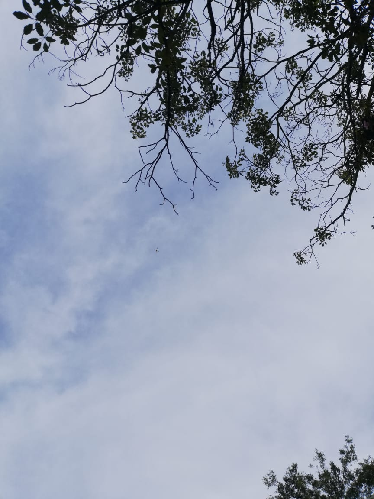
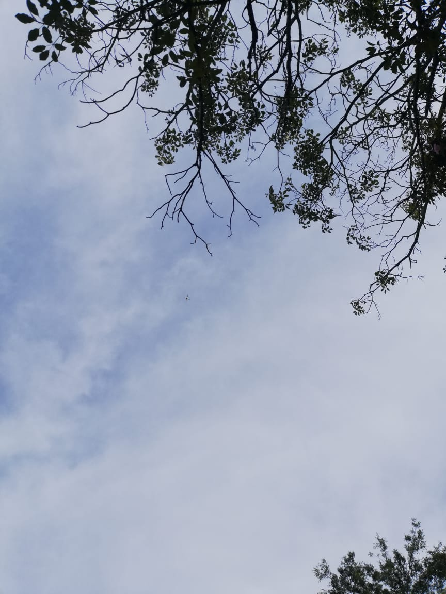
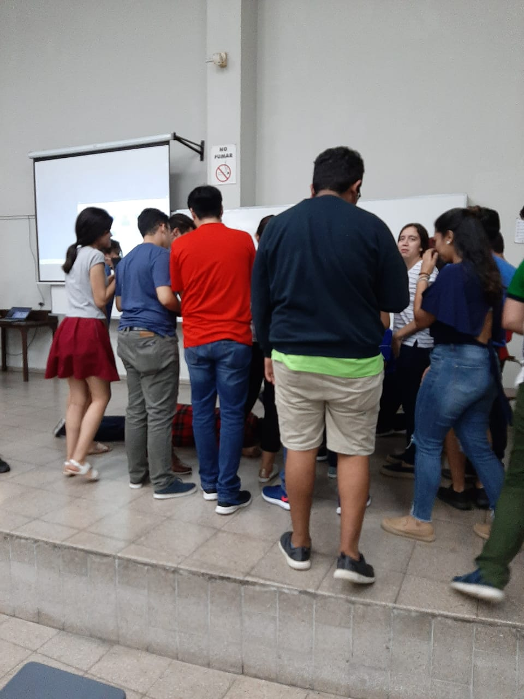
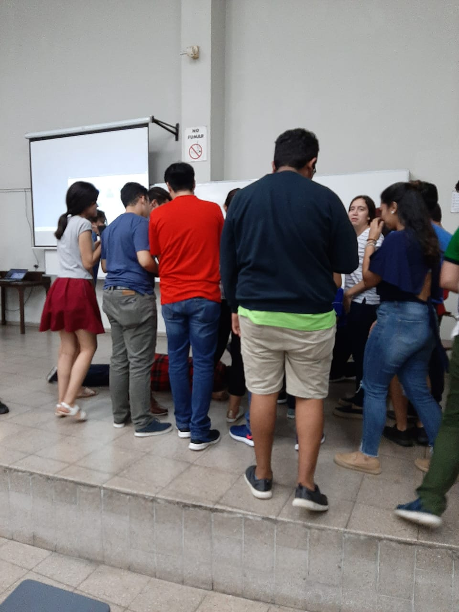

ejercicio 3
En contexto de la actividad Una visión perversa de manera individual, deberá crear un blog utilizando solamente HTML, CSS y JS en el cual publicará un artículo por cada día de esta semana.
El artículo deberá contener por lo menos una fotografía y dos párrafos de texto. El tema central de los artículos es explicar como resolver los retos propuestos en la actividad.
Restricciones de la página
- Solamente puede existir un archivo HTML, CSS y JS.
- El blog debe incluir una foto de su rostros 100% visible todo el tiempo.
- La página solo puede mostrar un artículo a la vez.
- Se puede cambiar de articulo seleccionandolo en un menú.
- La página no se puede recargar al cambiar de artículo.
- La página deberá ser publicada utilizando GitHub Pages.
Hola, soy Kurt.
Gracias ante todo por llegar hasta acá. La situación es sumamente delicada y aprecio vuestro apoyo en este asunto... me siento solo y, sinceramente, tengo mucho miedo.
Pensaba que conocía a Ale Rav, siempre fue algo reservado, extraño, pero jamás imaginé lo que acaba de decir. Por ahora para referirme a él creo que usaré el alias que él eligió, definitivamente no puedo dar su nombre real aún: no tengo más pruebas que mi propio testimonio y no sé qué conexiones podrá tener en la FGR o la PNC, o la misma UCA... creo que ha chantajeado a mucha gente, estoy seguro de que instaló troyanos por todos lados para poder obtener información comprometedora y así tener poder e influencia perversa, así que no me atrevo a denunciarlo, al menos no aún. Por supuesto, yo tampoco les voy a dar mi nombre real: más de alguno/a de ustedes puede ser cómplice de Ale, cualquiera se podría ver seducido por ese discurso absurdo.
Juela... si les soy sincero, lo que creo haber descubierto me hace sentir prácticamente como que estoy en una película de terror y que yo soy el primer personaje (sí, el incauto), al que envían primero al otro barrio sin pena ni gloria... así que no, no me voy a quedar de brazos cruzados ante la situación, pero extremaré tanto como pueda mi seguridad, quiero disfrutar la mucha vida que espero me quede aún. leer mas
Video proporcionado por ale rav.
Audio proporcionado por Kurt.
Bitacora
Dia 1 primer enfrentamiento contra ALE RAV.
Hoy se nos encomendó detener a ale rav asi que comenzamos creando una validación para que al ingresar un DUI este esté correcto.
¡Sabía que lo lograrías!
Perdón, pero ahorita no puedo entretenerme con halagos, tengo información nueva que debo compartir contigo de inmediato: me ha contado una compañera que Ale Rav creó un código que utilizará para detonar las bombas colocadas en la base de todos los edificios de la universidad. leer mas
Galeries


 

 
